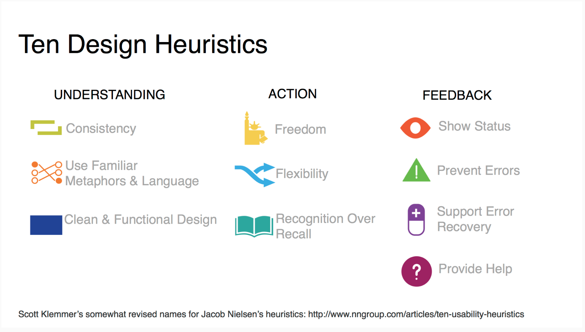
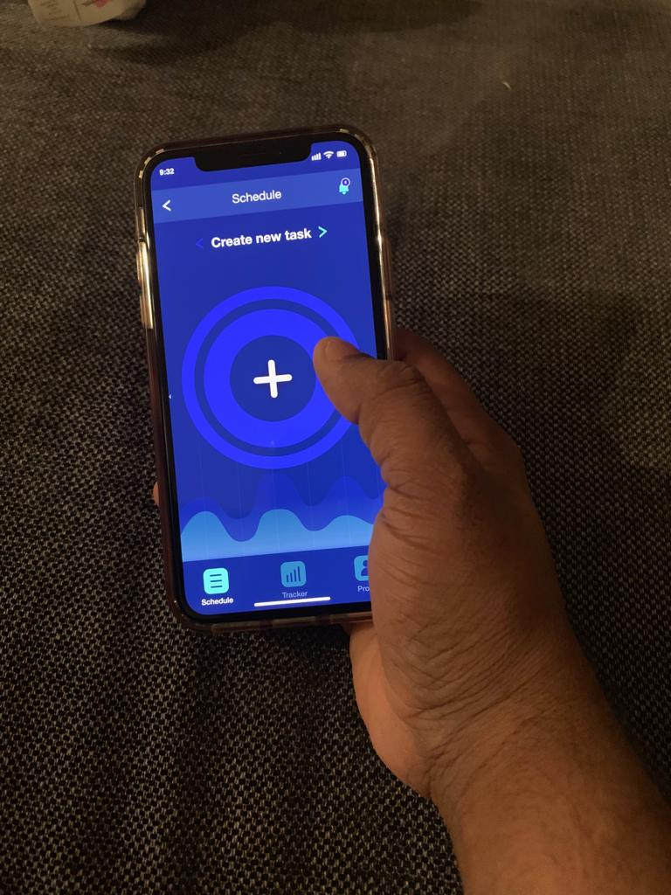
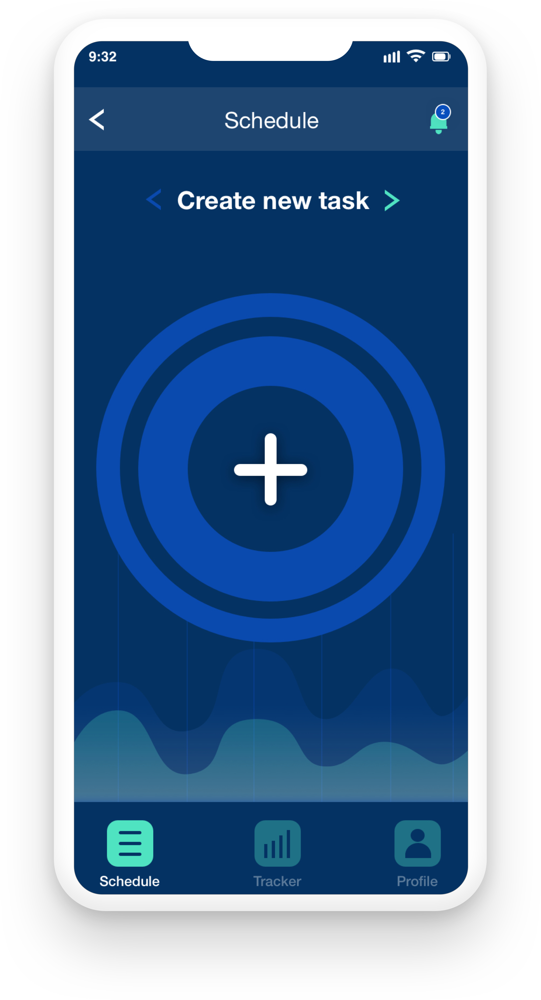

Overview
We have been excited to know about how much time we spent on professional work, personal work as well as free time activities in our everyday busy life. In the digital world everyone is using a laptop to work for professional as well as personal work, since we don’t know about how much time we are spending time on working with laptop and our eyes are getting strain. Since, I have designed the Work-Tracker mobile App. The work tracker mobile app is used for work schedule, track a time working with laptop [per day, week, month], also track the eye strain level of our eyes. Work tracker app case study [capstone project] is the last course of the Interaction design specialization through University of California San Diego & Coursera.
Project Details:
Challenge: To create the interactive User experience for the work tracker app that user can easily schedule their work, track working time per day or week or month, also user can show the eye strain level.
Timeline: 8 Weeks
Role: As a designer, observe the people and understand the user needs and goals as well as create the easy navigation and interactive user Interfaces for the work tracker.
Methods: User research, Brainstorm & Ideation, Creating storyboards, paper prototype, Heuristic evaluation, wire-framing, User test [In person & A/B test], Visual design.
Tools: Pen & Paper, photoshop, illustrator, Sketch App, Adobe XD, User testing.com
PROCESS
User Research:
The process begins with need findings. For the need findings, I have started three different people like designer, working women, software Employee. During the observation process, I have noticed some user problems as well as I have prepared the questeniors for the interview process. I have interviewed three people and note down user goals and pain points.
What did I found from the User research process?
Brainstorm & Ideation
From the brainstorming and ideation process working on user research outcomes, we noted down major user goals, user needs and user problems.
User pain points:
User Goals:
Sketching & Paper prototype:
Sketching : I have designed the storyboard from the ideation and brainstorming process. For the easy understanding of user needs and goals, I have sketched the storyboard. Two different storyboards locate different way of representing the user goals and needs. From the sketching process, I have noticed and clear understanding about how to create paper prototype.
Paper prototype : I have created the low - fidelity paper prototype that can help me to create most effective visuals of the mobile app design as well as to create the easy navigation for the app. The paper prototype helps me to focus on the conceptuals work of figuring out my app information architecture and functionality of my app, and save me from wasting hours twiddling pixels.
Heuristic Evaluation:
The evaluation process started with multiple walkthroughs that helps me to run better my paper prototype and identify problems with it also helps an evaluator can see paper prototype first time and interact with it. After that, I have conducted the Nielsen’s ten usability heuristics in-person as well as online evaluation of paper prototype using the slack communication channel. From the heuristic evaluation, I have noted down the most of the user problems while using paper prototype. From all the evaluations:
Key insights from Heuristic Evaluation:
Wireframes & Visual Design:
First, I have created a development plan for the upcoming task which helps me to complete the project on time. I have created the wireframes for the app’s home screen, tracker for the work and eye strain level screen, profile screen, notification screen for the app. From the wireframes I have created the visual design for the app. I have experimented with typography, color and graphics on the wireframes and then finalize the visual design of the app. I have created the visual design of the app using the sketch app and adobe XD.


User test:
Testing with real world user and A/B Test:This is the final step of the interaction design project. For the in person user test, I have developed a protocol and then with the user permission I have record the observations. From the user test, I have observed the small usability problems while using the app. I have noted down the real world user test. After that, I have launched the A/B test. This is the most effective way to find the small usability problems. A/B test is conducted in Usertesting.com, where the final visual app has tested by the three real world users and they give the feedback about the small usability problems.
Key insights found from final prototype :
Clickable Prototype:
Outcomes from Work-Trcaker Mobile App:
I have learnt from this interaction design specialization project that using the design thinking process that helps designers to understand the real world user problems and solve it by creating the beautiful user interactions.
Create beautiful user interface of the app that includes visual screens of the app, graphics, iconography, typography, using the color pallete that helps for making beautiful color combinations of the app.
Work tracker app is the final presentation of the app before coming to this final stage, I have applied the user research, Brainstorming and ideation, Create a storyboard and paper prototype, Heuristic evaluation, User test and to create a clickable prototype.